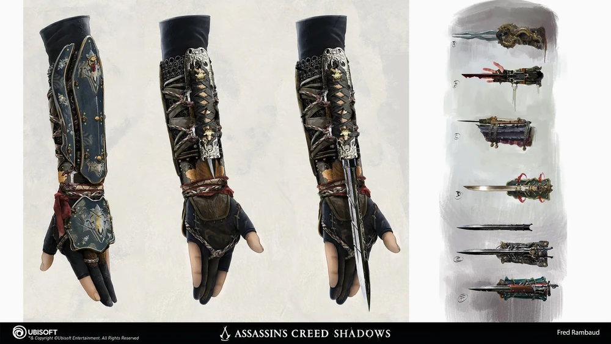
Concepção
Realização do desejo do públido de um jogo na revolução francesa, suas artes conceituais vazadas ja cativaram o público antes do projeto ser anunciado
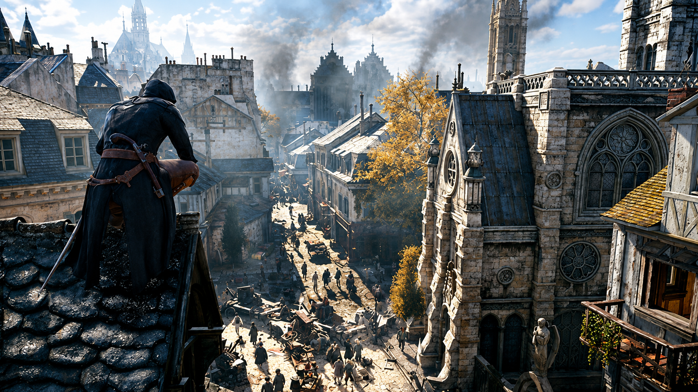
Descubra como a Ubisoft recriou a Paris da Revolução Francesa e desenvolveu um dos jogos mais ambiciosos da franquia Assassin's Creed.

Realização do desejo do públido de um jogo na revolução francesa, suas artes conceituais vazadas ja cativaram o público antes do projeto ser anunciado
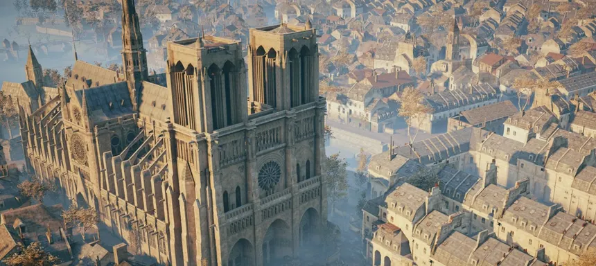
A recriação fiel da cidade de Paris durante a revolução em escala quase real em 3D.
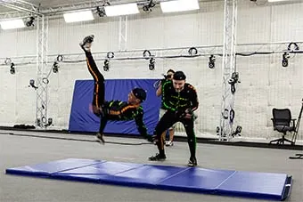
Mocap para a animação de todos os personagens incluindo NPCs, fazendo com que seja considerado o melhor parkour da saga até hoje.
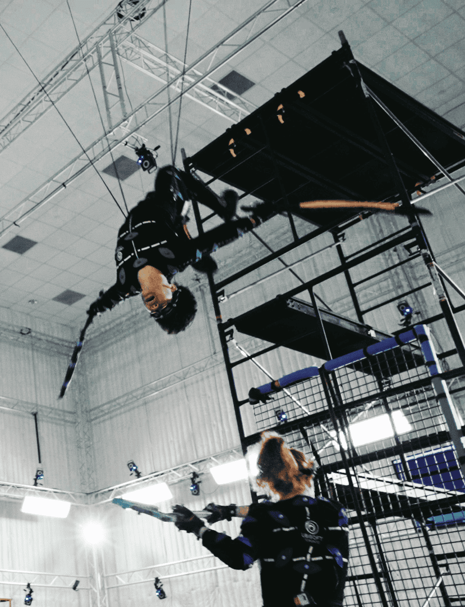
Atualização da Anvil, engine que garantiu que os gráficos do jogo ficassem muito a frente de seus concorrentes em 2014.
Início do projeto/pré-produção.
Pesquisa histórica com professores.
Primeiras demos jogáveis.
Produção Total.
Anuncio e marketing para o lançamento.
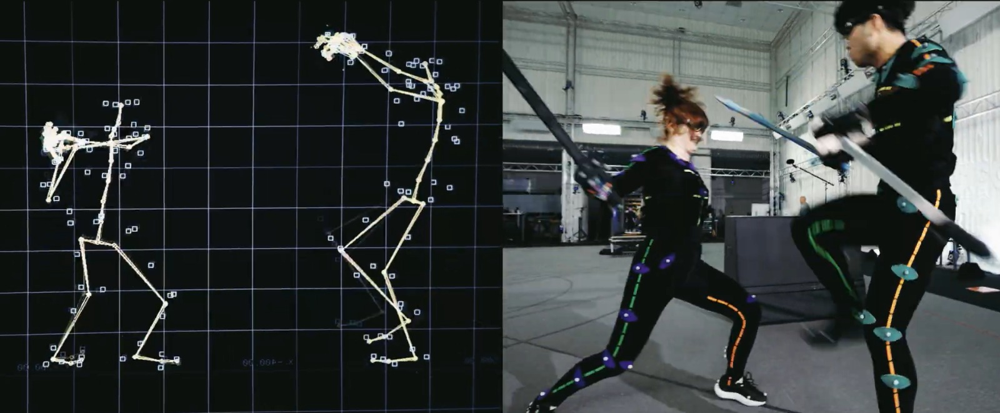
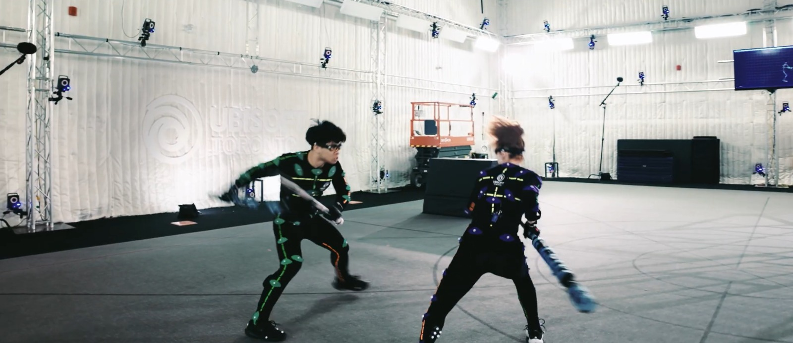
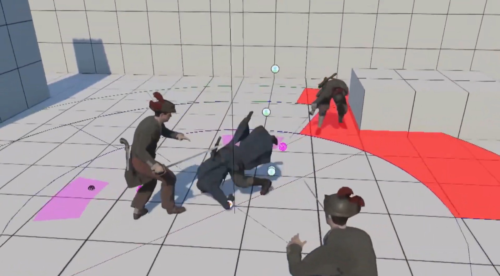
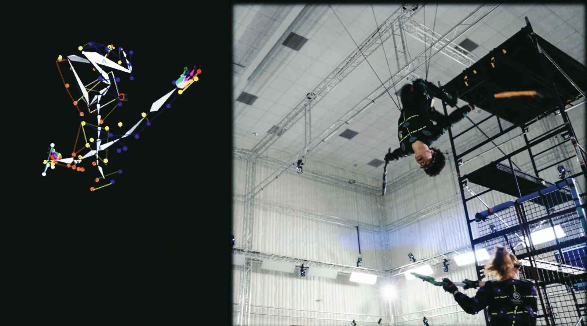
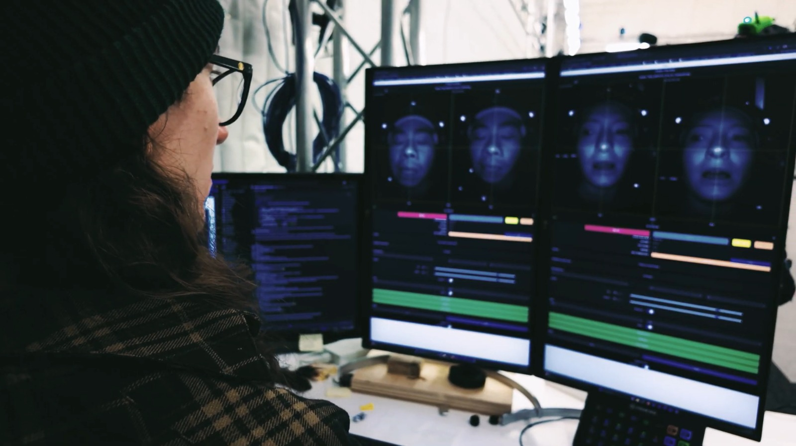
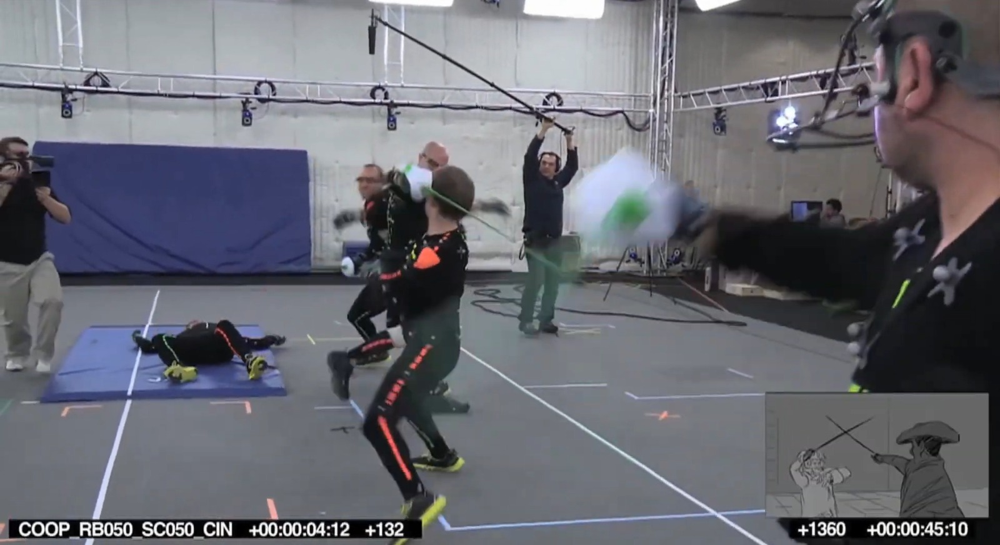
Estudios da Ubisoft envolvidos simultaneamente no projeto
NPCs controlados pela IA de uma vez só em apenas uma cena
Funcionários da equipe ativos trabalhando no projeto